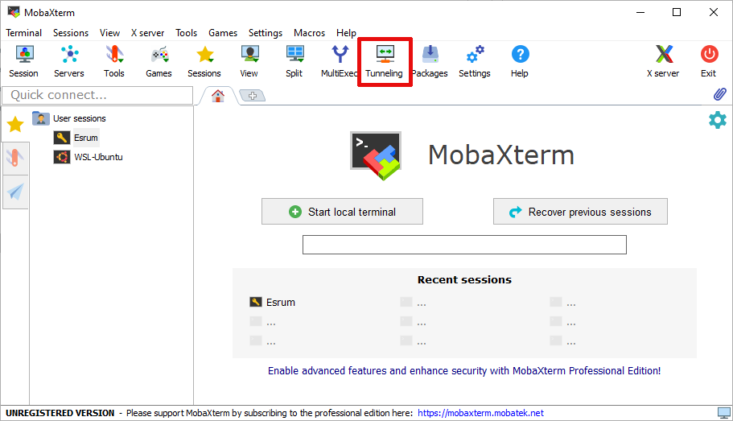
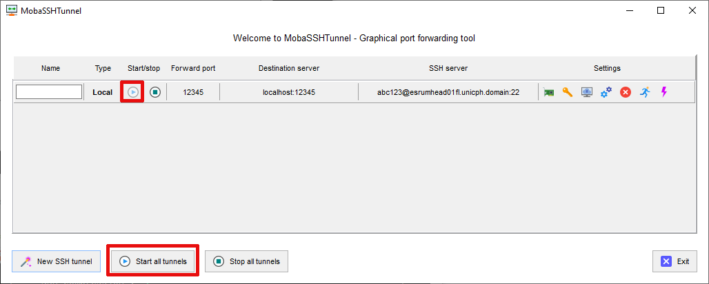

Port forwarding¶
This page describes how to set up port forwarding from your PC or laptop, to the Esrum head node or to a compute node on Esrum. Before you continue, please select the port you wish to forward. The following examples will be updated to match that choice.
Once you have selected a port, please select your operating system of choice:

Port forwarding for Windows users¶
The following instructions describe how to set up port forwarding to Esrum from your laptop or PC running Windows. It is furthermore assumed that you are using MobaXterm to connect to Esrum (see the Configuring MobaXterm section). If not, then please refer to the documentation for your software of choice.
Install and configure MobaXterm as described in Configuring MobaXterm.
Click the middle
Tunnelingbutton on the toolbar.Click the bottom-left
New SSH Tunnelbutton.
Follow these steps to configure the tunnel:
XXXXX XXXXX XXXXX

In middle-left box, write your chosen port number as shown above.
If the service you wish to connect to is running on a compute note, then replace
localhostin the top-right pair of boxes with the name of that node (such asesrumcmpn07fl.unicph.domain), and enter your chosen port number.In the middle-right trio of boxes, write the full name of the head node (
esrumhead01fl.unicph.domain), write your UCPH username where the screenshot hasabc123, and make sure that the value is22.Finally, click
Save.
If the tunnel does not start automatically, press either the Play-icon button or the
Start all tunnelsbutton:Enter your password and your SSH tunnel should now be active.
Port forwarding for OSX/Linux users¶
The following instructions describe how to set up port forwarding to Esrum from your laptop or PC running OSX or Linux.
This is accomplished by running the following command-line on your
laptop or PC, replacing esrumcmpn07fl with the name of the node to
which you want to forward a port, and replacing abc123 with your
UCPH short username:
$ ssh -S none -N -L 'XXXXX:esrumcmpn07fl:XXXXX' abc123@esrumhead01fl.unicph.domain
If the service you wish to connect to is instead running on the head node, then use the following command:
$ ssh -S none -N -L 'XXXXX:localhost:XXXXX' abc123@esrumhead01fl.unicph.domain
The -S none option ensures that SSH opens a new connection even if
shared connections are enabled (see the ControlMaster section in
man ssh), which is required to forward the requested ports. The
-N option prevents ssh from opening a shell on Esrum, which
ensures that you do not accidentally use this terminal and then close
it, while still using the forwarded port, and the -L option
configures the actual port forwarding.
Tip
If you created a ~/.ssh/config file as suggested in the
Connecting on Linux section, then you can use the shorter
command ssh -S none -N -L 'XXXXX:esrumcmpn07fl:XXXXX' esrum.